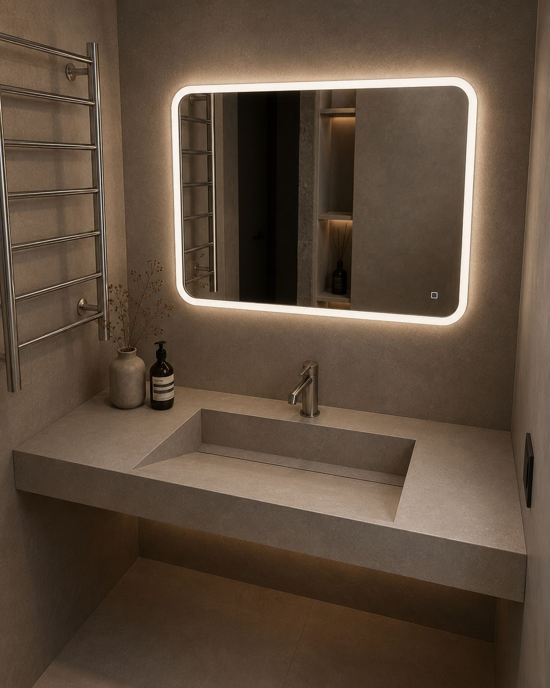

Стільниці під раковину
Під накладну або врізну раковину: точний розмір під тумбу, отвори під змішувач, запил під стіну без зазору.
Умивальник, стільниця під раковину, душовий піддон і стінові панелі — з непористого каменю, під розмір вашої кімнати. У ванній щодня вода, тож важливо не те, де красиво, а те, де немає швів і затирки.

Що робимо у ванну
Умивальник, стільниця й панелі з однієї партії плити — колір збігається точно, а не приблизно
23 моделі в чотирьох серіях: від класичної ракушки до чаші з цільного валуна мармуру. Будь-який розмір під вашу тумбу.
Під накладну або врізну раковину: точний розмір під тумбу, отвори під змішувач, запил під стіну без зазору.
Монтаж урівень з підлогою, щілинний трап, протиковзка фактура. Розмір рахуємо під вашу нішу, а не навпаки.
Великоформатні панелі замість плитки: менше стиків — менше місць, де з'являється грибок. Екран ванни робимо знімним.
Каталог
Серії відрізняються не оздобленням, а підходом до форми. Розмір у будь-якій з них ваш — моделі задають геометрію, не габарит.
Комбінації матеріалів: скло з каменем, цільний валун мармуру, зонована стільниця, прихований злив.
Класична геометрія: ракушка, човник, куб. Форми, які пасують будь-якій ванній і не набридають.
Прямі лінії без жодного радіуса: щілинний злив, робочі зони, подвійні конфігурації, моноліт з тумбою.
Форми, де раковини не видно: нахилена площина, органічні радіуси, товста плита, форма під конкретну кімнату.

Там, де вода щодня
По суті
Чаша й стільниця — одне полотно. Зникає стик, у якому за рік темніє герметик, і зникає причина міняти його щосезону.
Ванна рідко буває зручною. Виріб робиться під нішу, під тумбу й під те, де стоїть стояк, а не підбирається з наявного.
Акриловий камінь не морозить руки зранку, як кераміка. У ванній це помітно щодня, хоча в каталозі такого не напишуть.
Слід від фарби для волосся чи подряпину на акрилі виводимо шліфуванням прямо у вас, без демонтажу й без заміни чаші.
Матеріали
Головний матеріал для ванної: чаша й стільниця зростаються в одне полотно без шва, поверхня тепла на дотик і шліфується на місці.
Твердіший і стійкіший до подряпин. Добре йде на стільниці під накладну раковину та на широкі поверхні.
Великий формат і мінімум стиків на стінах та піддонах. Не боїться побутової хімії та пари.
Чаші з цільного валуна мармуру: двох однакових не буває. Породу й малюнок обираєте ви, догляд потрібен акуратніший.
Питання
Не буде де з'явитися. Камінь непористий і не вбирає воду, а чаша з тим самим полотном не має шва, у який вона затікає. Грибок росте у стиках і затирці, а не на поверхні.
Так, це й є основна робота. Ви даєте ширину тумби й ніші, ми підганяємо модель під неї. У каталозі 23 моделі, але жодна з них не має фіксованого габариту.
Акриловий камінь на дотик відчутно тепліший за кераміку й за кварц. Якщо у ванній ходять босоніж і чіпають поверхню щоранку, різниця помітна.
На акрилі подряпину чи слід від фарби для волосся виводимо шліфуванням прямо у вас у ванній, без демонтажу. На кварці й керамограніті подряпати поверхню в побуті значно важче.
Підключення робить ваш сантехнік, а ми привозимо виріб з готовими отворами під змішувач і злив за його розмітку. Так ніхто не свердлить камінь на місці навмання.
Для бізнесу
Працюємо за вашими кресленнями: нестандартні габарити, узгодження розкладки панелей, виготовлення партією під об'єкт. Для постійних партнерів умови окремі.
Суміжні розділи
Дякуємо. Передзвонимо протягом години в робочий час.